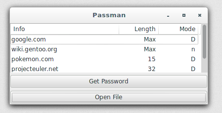

passman
Passman is a password manager written in Haskell. It generates passwords from a master password and a short string. These strings are to be kept in a text file which passman will load to generate passwords. The generated passwords will be 128 characters by default but can be shortened if required.
usage
On first usage, passman will prompt for a master password. This master password must be entered each time a password is generated. To change the master password, delete ~/.passman-masterpasswd but note that generated passwords will now be different.
To generate a password, passman will prompt for the master password
The generated password will then be stored in clipboard. Clicking "OK" on the next dialog will clear the clipboard.

file format
Separate strings with newlines. If the password needs to be shorter than 128 characters, add the length to the end of the line separated by a tab. An example is provided as example.txt:
